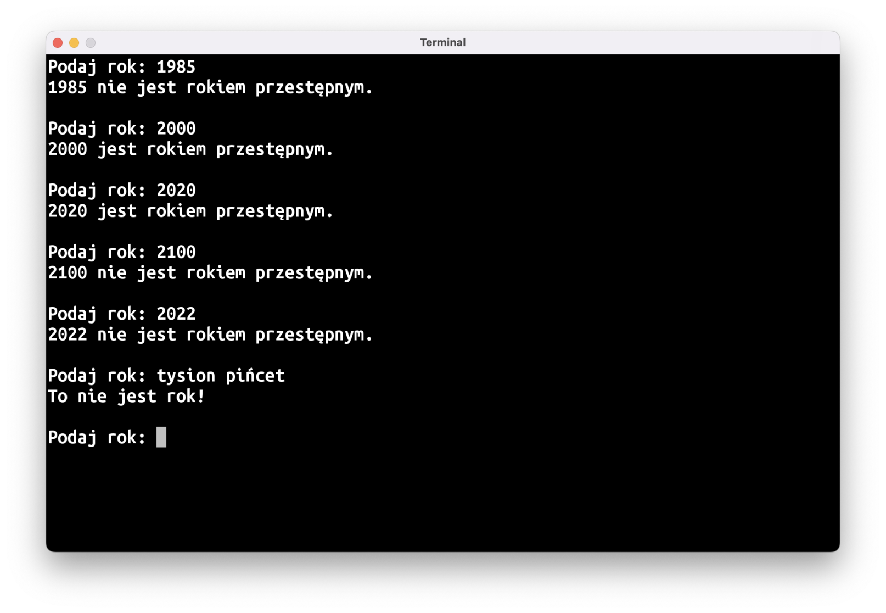
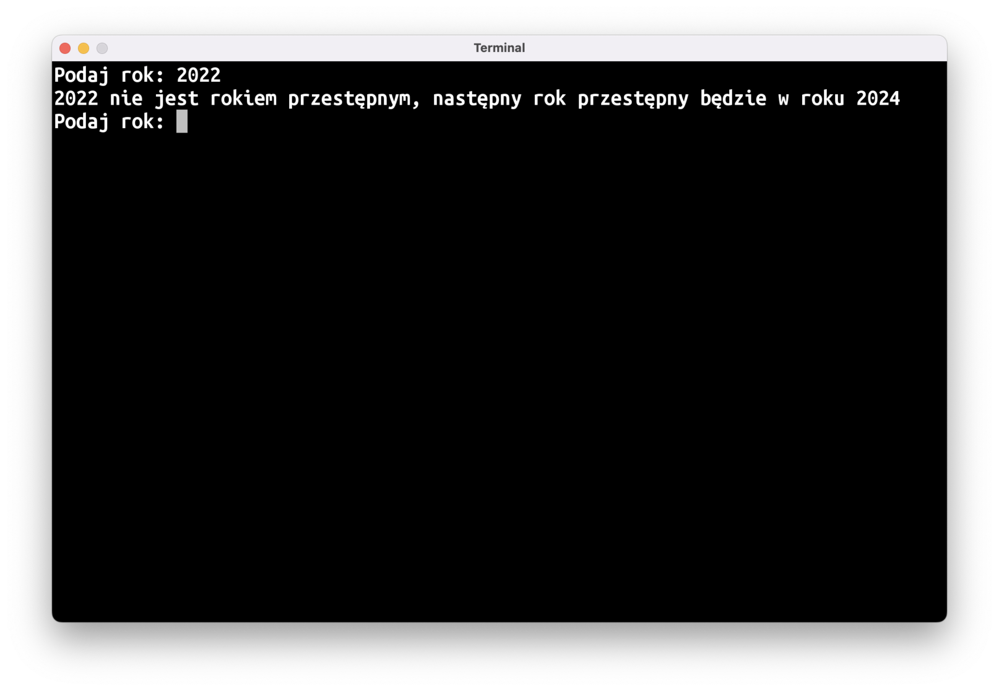
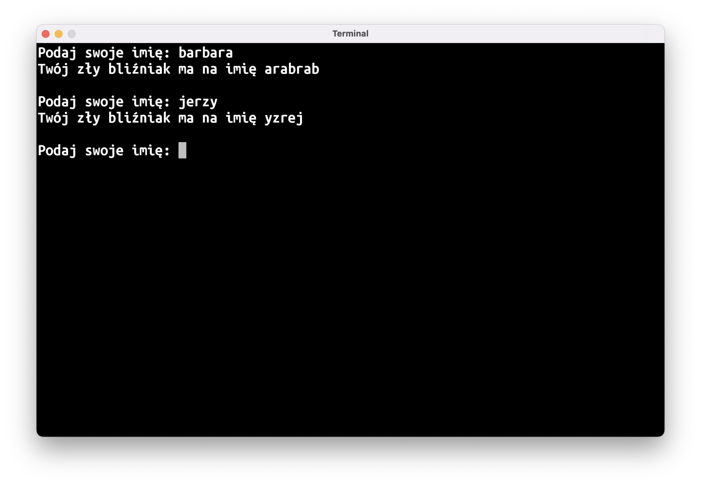
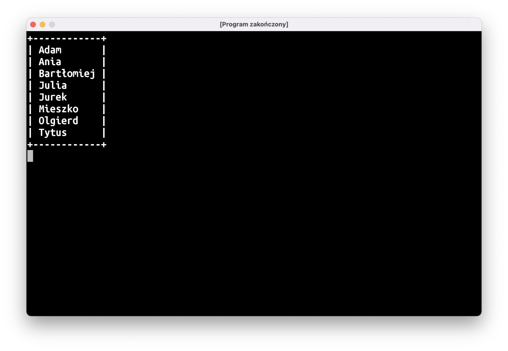
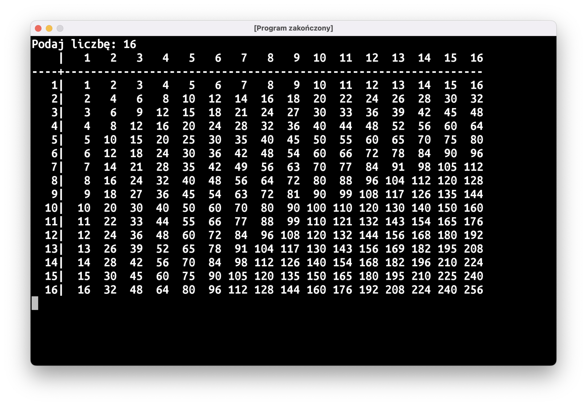
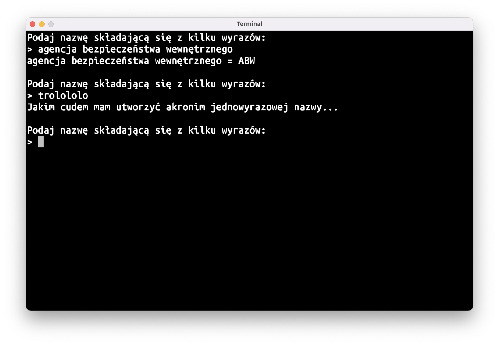
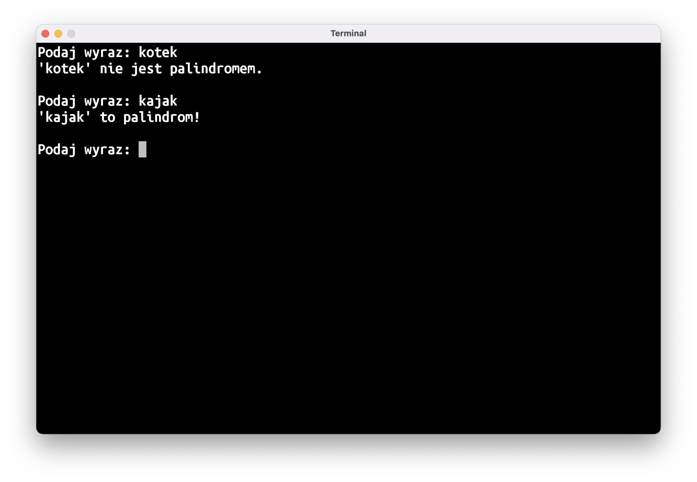
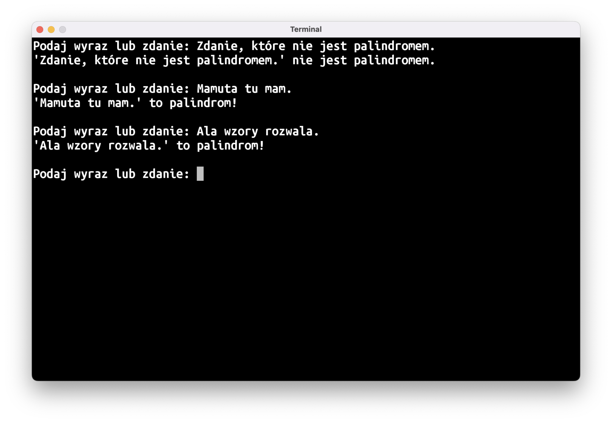
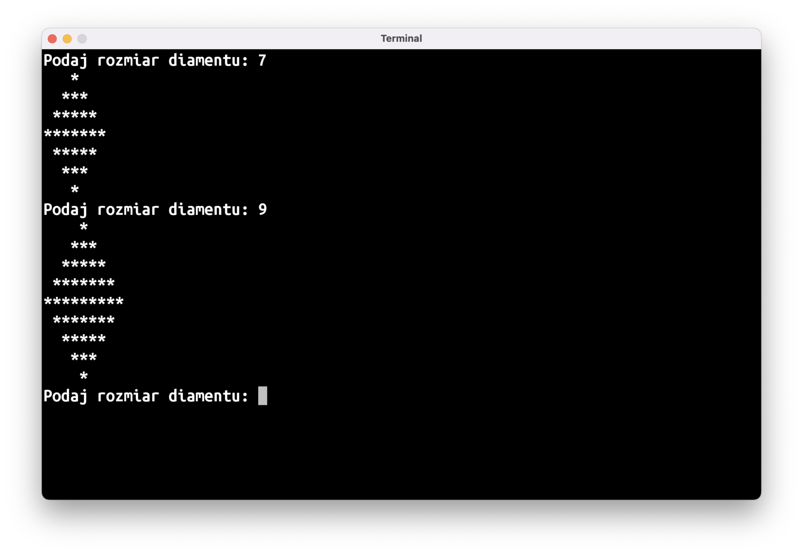
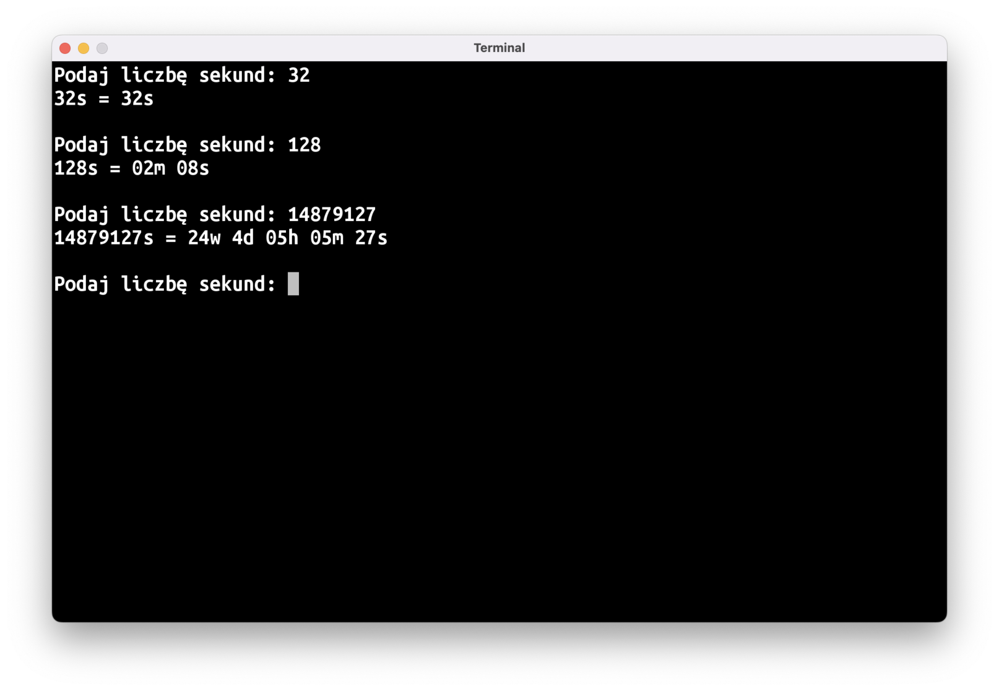

Powtórka?
Mieliśmy przerabiać dzisiaj nowy materiał, ale po ostatnich zajęciach doszedłem do wniosku, że przyda się wam lekcja powtórkowa. Zrobimy ekspresowy przegląd przerobionego materiału, a potem spróbujemy naszych sił na serii zadań praktycznych.
Teoria
Na liście poniżej znajdziecie odnośniki do poprzednich wpisów, gdzie tłumaczone są poszczególne tematy:
- Obiekty i typy
valivar- Funkcje (1 2 3 4 5)
- Operatory porównania, logiczne i matematyczne
- Typy opcjonalne
if..elseif..else if..elsewhenwhen(…)do..whileforpackageiimport
Praktyka
Wiedza teoretyczna to jedno, a umiejętność zastosowania jej w praktyce, to drugie. Zauważyłem, że właśnie z praktycznym wykorzystaniem swojej wiedzy macie największe problemy, tak więc większość czasu spędzimy dziś właśnie na tym.
Stoi przed wami aż 10 zadań o różnym poziomie trudności. Nieco trudniejsze zadania oznaczone są ⭐️, zadania bardzo trudne oznaczyłem ☠️.
Na zajęciach zapewne uda się wam zrobić tylko część z nich, resztę możecie spróbować rozwiązać w domu. Jeśli nie macie pomysłu na rozwiązanie jakiegoś zadania albo zatniecie się w pewnym momencie, przejdźcie do kolejnego zadania.
Pamiętajcie, aby każdy program pisać w nowym pliku!
Powodzenia!
😈 Piekielny Prowadzący
Prowadzący zajęcia z programowania co tydzień zamieszcza na stronie kilka programów do zrobienia w domu.
Skopiujcie dane wejściowe do waszego programu:
val zadania = listOf<Int>(
0, // 2022-10-11
0, // 2022-10-18
8, // 2022-10-25
8, // 2022-11-08
4, // 2022-11-15
3, // 2022-11-22
10, // 2022-11-29
)
I napiszcie program, który podliczy, ile łącznie zostało zadanych zadań.
🔎 Najdłuższe imię
Napiszcie program, który wyszuka najdłuższe imię na liście uczestników:
val uczestnicy = listOf<String>(
"Adam",
"Ania",
"Bartłomiej",
"Julia",
"Jurek",
"Mieszko",
"Olgierd",
"Tytus",
)
📆 Rok Przestępny
Napiszcie program, który będzie wczytywać rok, a następnie napisze, czy dany rok jest przestępny, czy nie. Zgodnie z Wikipedią:
[…] latami przestępnymi są te, których numeracja:
- jest podzielna przez 4 i niepodzielna przez 100 lub
- jest podzielna przez 400

Podpowiedź: konieczne będzie użycie operatora % zwracającego resztę z dzielenia przez liczbę (np.: 12 % 5 == 2). Mogą przydać się też operatory logiczne && (logiczne “i”) oraz || (logiczne “lub”).
Bonus: kiedy wypada następny rok przestępny? ⭐️
Jeśli wczytany rok nie jest rokiem przestępnym, niech program napisze, kiedy wypada następny rok przestępny.

♊️ Zły Bliźniak ⭐️
Niech wasz program wczyta imię użytkownika, a następnie wypisze imię jego złego bliźniaka z wymiaru lustrzanego (jak powszechnie wiadomo, imię złego bliźniaka z lustrzanego wymiaru to imię z naszego świata czytane od tyłu).

🖼 Lista w Ramce ⭐️
Napiszcie program, który wypisze listę obecności na naszych zajęciach w ramce:
val uczestnicy = listOf<String>(
"Adam",
"Ania",
"Bartłomiej",
"Julia",
"Jurek",
"Mieszko",
"Olgierd",
"Tytus",
)

Łatwy sposób na stworzenie tekstu składającego się z kilku takich samych znaków to użycie funkcji String.repeat(n: Int): String (np.: "-".repeat(10)).
Przyda się wam też funkcja String.padEnd(n: Int): String, która dodaje do tekstu tyle spacji, żeby cały tekst miał dokładnie n znaków.
🧮️ Tabliczka Mnożenia ⭐️
Napiszcie program, który wczyta liczbę i wypisze tabliczkę mnożenia do wartości n*n

Jeśli chcecie osiągnąć taki sam efekt jak na rysunku powyżej, przyda się wam funkcja String.padStart(n: Int): String, która działa podobnie jak padEnd, przy czym spacje dodawane są na początku tekstu, a nie na końcu.
🔤 Akronimy ⭐️
Napiszcie program, który utworzy akronim wpisanej nazwy, czyli skrót złożony się z pierwszych liter wszystkich wyrazów:

Podpowiedź: potrzebne będzie użycie funkcji String.split(" "), która dzieli tekst na wyrazy i zwraca wynik w postaci List<String>.
🔁 Palindrom ⭐️
Niech wasz program sprawdza, czy podany tekst jest palindromem (czyli wyrazem, który brzmi tak samo czytany od przodu i od tyłu):

Podpowiedź: napiszcie najpierw program “Zły Bliźniak”.
Bonus: palindromiczne zadania ☠️
Zmieńcie program tak, aby wykrywał też zdania, które są palindromami (należy zignorować spacje, przecinki, kropki, itp.):

💎 Rysowanie Diamentu ☠️
Napiszcie program, który przy użyciu gwiazdek (*) i spacji ( ) narysuje diament o podanej szerokości. Dla uproszczenia możecie przyjąć, że szerokość zawsze będzie liczbą nieparzystą:

⏰ Sekundy na Czas ☠️
Napiszcie program, który wczyta liczbę sekund, a następnie zamieni to na czas wyrażony w minutach, godzinach, itd. Za największą jednostkę czasu przyjmijcie tydzień.
